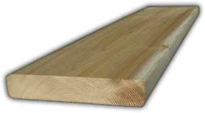
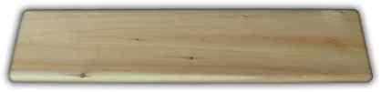

Our Eased-Edge Cedar Decking is smooth, clean, easy to work with, and full of natural character. If you are building a deck, porch, or dock there is nothing else that is as affordable and long-lasting as Northern White Cedar decking from Authentic Log Homes.
Northern White Cedar is the ideal natural material for rain, snow, and weather exposed projects. There is no other native wood species that is as ideally suited for North American climates and our seasonal variations. Authentic Log Homes Northern White Cedar Eased-Edge Decking is naturally rot, mildew, and weather resistant. What you get is an all natural product that will hold up against the elements without environmentally hazardous chemical treatments and preservatives.

"Great for decks, porches, footbridges, and docks!"
Click here to request a quote online.
Don't forget we can also quote other dimensional deck/porch building materials: posts, railings, fascia, joists, and framing. If you have priced decking from somewhere else we think you will be pleasantly surprised by our price!
Note: Please be a good steward of our environment! Do not put chemically treated wood products in waterways, or where water runoff will enter wetlands. (For these applications our lumber is ideally suited!)
To request an estimate call 1-800-811-2092 or click here.